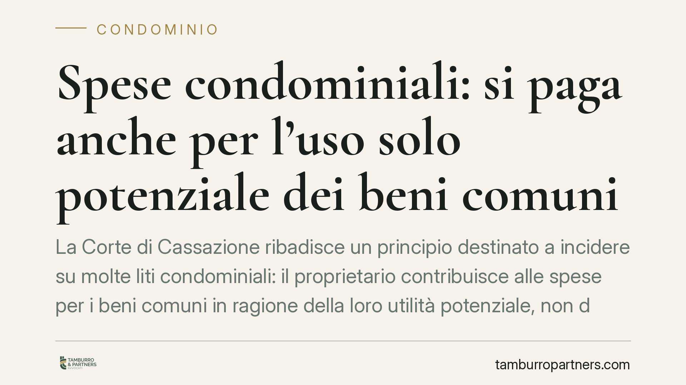

Spese condominiali: si paga anche per l'uso solo potenziale dei beni comuni
La Corte di Cassazione ribadisce un principio destinato a incidere su molte liti condominiali: il proprietario contribuisce alle spese per i beni comuni in ragione della loro utilità potenziale, non dell'uso che ne fa in concreto. Chi non utilizza ascensore, cortile o scale, dunque, in linea di principio paga ugualmente. Vediamo perché e con quali eccezioni.

Il principio affermato dalla Cassazione
La questione è ricorrente: un condòmino che non usa l'ascensore perché abita al piano terra, oppure che non frequenta il cortile o l'area verde, può rifiutarsi di pagare le relative spese? La risposta della Corte di Cassazione resta negativa.
Il criterio adottato è quello dell'uso potenziale del bene comune. Ciò che rileva non è l'utilizzo effettivo, ma la possibilità giuridica e materiale di servirsene. Finché il bene è a disposizione del proprietario in quanto tale, il contributo alle spese è dovuto.
Inquadramento normativo
Il riferimento è l'articolo 1123 del Codice civile, che disciplina la ripartizione delle spese condominiali. Il primo comma stabilisce la regola generale: le spese per la conservazione e il godimento delle parti comuni sono sostenute dai condòmini in proporzione al valore della proprietà di ciascuno (i cosiddetti millesimi), salvo diversa convenzione.
Il secondo comma introduce un correttivo: quando si tratta di cose destinate a servire i condòmini in misura diversa, le spese sono ripartite in proporzione all'uso che ciascuno può farne. Anche qui, però, il parametro è il *potenziale* godimento, non l'uso reale.
Il terzo comma riguarda i beni destinati a servire solo una parte dell'edificio (ad esempio un impianto al servizio di una sola scala): in tal caso la spesa grava unicamente sul gruppo di condòmini interessati. È in questo perimetro che si gioca la maggior parte delle eccezioni.
La logica del sistema è chiara: il bene comune resta un valore a disposizione di tutti i comproprietari. La rinuncia all'uso effettivo è una scelta individuale che non sposta l'obbligo contributivo. Diversa è la posizione di chi, per ragioni strutturali e oggettive, non può in alcun modo trarre utilità dal bene.
Implicazioni pratiche
Per il proprietario, il messaggio è netto: non basta dichiarare di non usare l'ascensore o il giardino per sottrarsi al pagamento. La mancata fruizione volontaria non incide sull'obbligo.
La situazione cambia quando manca ogni possibilità di uso. Un esempio classico è quello del proprietario di un locale commerciale con ingresso autonomo dalla strada, privo di accesso interno all'androne o alle scale: in tal caso può sostenersi che il bene non sia destinato a servirlo, con conseguente esclusione dalla spesa relativa.
È una distinzione sottile ma decisiva. Tra il "non voglio usarlo" e il "non posso usarlo" corre la linea che separa la spesa dovuta da quella contestabile.
Per l'amministratore di condominio, la conseguenza operativa è altrettanto rilevante: i riparti devono rispettare le tabelle millesimali e le destinazioni d'uso dei beni. Un'esclusione concessa senza fondamento, così come un addebito imposto a chi è oggettivamente tagliato fuori, espone a impugnazione della delibera assembleare.
Cosa fare in concreto
- Verifica la natura del bene per cui contesti la spesa: chiediti se l'impossibilità di uso è strutturale e oggettiva o solo una tua scelta. Solo la prima ipotesi è rilevante.
- Controlla le tabelle millesimali e il regolamento condominiale: eventuali criteri di riparto convenzionali prevalgono sulla regola legale dell'art. 1123.
- Conserva la documentazione che dimostra l'eventuale impossibilità di accesso o fruizione (planimetrie, accessi separati, configurazione dei locali).
- Impugna la delibera nei termini: il condòmino assente o dissenziente ha trenta giorni dalla comunicazione del verbale per agire davanti al giudice. Lasciar decorrere il termine consolida il riparto.
- Consigliamo di valutare con un professionista la fondatezza della contestazione prima di sospendere i pagamenti: la morosità unilaterale espone a decreto ingiuntivo immediatamente esecutivo.
La regola dell'uso potenziale tutela la stabilità della gestione condominiale e scoraggia contestazioni pretestuose. Le eccezioni esistono, ma vanno fondate su elementi oggettivi e fatte valere nei tempi e nelle forme previste.
---
Contributo informativo a cura di Tamburro & Partners - Avv. Giuseppe Tamburro. Non costituisce parere legale.
Ogni condominio ha una storia a sé.
Se gestisci un'amministrazione e vuoi un confronto su una specifica questione condominiale, scrivi allo studio. Ti rispondiamo entro un giorno lavorativo.